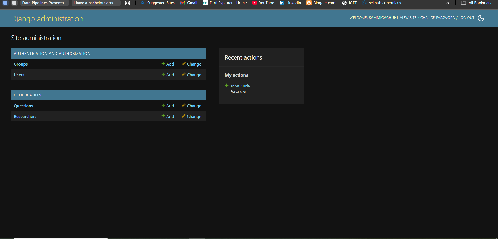

Chapter 18: Geodjango model
Model outline
Let's assume we are researchers who are going to collect responses on the age, crops grown and the county at which the farmer is cultivating their produce.
We want to design a form that will collect responses to the following fields:
Researchers - a multi-select question that inserts the names of all researchers involved in the project.
Recorder - the person conducting the survey.
Responder name - the person responding to the survey (optional)
Location - the geographic coordinates of where the survey is being carried out. This field will collect the coordinates as a point layer.
Age - this is the age of the respondent
Crops - a multi-select dropdown question that allows the recorder to select the crops grown
Image - an image of the respondent's farm (optional).
Comments - a textfield that allows the recorder to add any additional textual information.
Designing the model
Let's create our first model that will capture the name of the researcher.
At the very beginning of our models.py import the necessary models.
from django.db import models
from django.contrib.gis.db import models
Now here is the class to capture our researchers' names.
class Researcher(models.Model):
full_name = models.CharField(max_length=50)
def __str__(self):
return self.full_name
Now add the following class that will capture the rest of the fields of: recorder, responder name, location, age, crops, image and comments fields. Notice that the Recorder field is related to the Researchers field via a many-to-one relationship as exemplified by the ForeignKey field.
class Question(models.Model):
CROPS = {
"maize": "Maize",
"wheat": "Wheat",
"rice": "Rice",
"potatoes": "Potatoes",
"green_grams": "Green grams",
"beans": "Beans",
"sugarcane": "Sugarcane",
"arrowroots": "Arrow roots"
}
recorder = models.ForeignKey(Researcher, on_delete=models.CASCADE)
names = models.CharField(max_length=100)
location = models.PointField()
age = models.IntegerField()
crops = models.CharField(
choices=CROPS,
default="potatoes"
)
image = models.ImageField(upload_to='images/')
comments = models.TextField()
def __str__(self):
return f"{self.recorder} {self.names} {self.location} {self.age} {self.crops}"
Create a media folder
Because we will be uploading images, we have to create a media/ folder which shall store the images that shall be uploaded locally.
Within your my_geodjango directory, create a media/ folder and within it create an images folder.
media
└── images
Image configurations in the settings.py file
Since we also want to capture images, we shall add two new variables in the settings.py file.
MEDIA_URL = "/media/"
MEDIA_ROOT = BASE_DIR / "media"
Urls and views
Also, we shall add a new addition to the agriculture/urls.py file. At the very top, import the include, settings, and static packages.
from django.contrib import admin
from django.urls import path, include
from django.conf import settings
from django.conf.urls.static import static
Then add the static images to the urlpatterns variable.
urlpatterns = [
path('admin/', admin.site.urls),
path("", include("geolocations.urls")),
] + static(settings.MEDIA_URL, document_root=settings.MEDIA_ROOT)
Let's go to the geolocations/views.py file.
Let's create a simple home page.
from django.shortcuts import render
from django.http import HttpResponse
# Create your views here.
def home(request):
return HttpResponse("Welcome to the Geolocation App!")
Create a geolocations/urls.py file and create the urlpatterns for the homepage view of our geolocations app.
from django.urls import path
from . import views
urlpatterns = [
path("", views.home, name="home"),
]
Configurations in the admin.py file
In the geolocations/admin.py file, we shall import some new tools.
Here we go.
from django.contrib import admin
from .models import Researcher, Question
# from django.contrib.gis.admin import OSMGeoAdmin
from django.contrib.gis.admin import GISModelAdmin
Let's also register our models.
@admin.register(Researcher)
class ResearcherAdmin(admin.ModelAdmin):
list_display = ('full_name',)
@admin.register(Question)
class QuestionAdmin(GISModelAdmin):
list_display = ('recorder', 'names', 'location', 'age', 'crops',)
Running the server
Now let's fire up our server.
python3 manage.py runserver
When you open your local host http://127.0.0.1:8000/, you will meet an unappealing welcome message.

If you proceed to the admin webpage (http://127.0.0.1:8000/admin/) you will see the two models of Researcher and Question that we created.

Proceed to add some recorders' names under Researchers, and proceed to fill some fields under the Questions model.You will notice that the dropdown in the Recorder field is dependent on the names you inserted in the Researcher class.
The values you defined in the list_display variable are what will be shown in the Questions interface of our admin webpage.